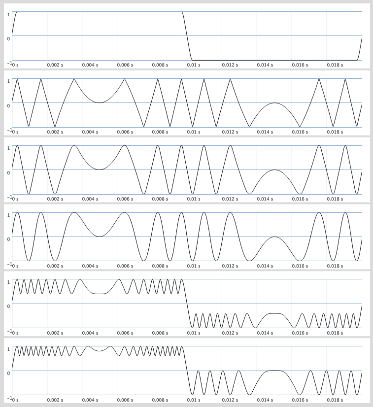

Tutorials (extension)
| Libraries > miSCellaneous > WaveFolding
Smooth Clipping and Folding Extension
Extension
Extensiona suite of pseudo ugens for smooth clipping and folding
Description
Wave folding is a synthesis technique from analog days, going back to Donald Buchla and the tradition of west coast synthesis. Smooth clipping and folding pseudo ugens from miSCellaneous lib come in variants which include quadratic and sinusoidal waveshaping and allow clipping and folding without aliasing. This can also be used for buffer scratching, a synthesis technique which I have been experimenting with recently with great fun.
Examples
Ex. 1: Different types of folding

Ex. 2: Generating rich spectra by folding sine waves
Ex. 3: Applying modulated folding to LFO sources
Ex. 4: Buffer scratching with folded signal as position control
helpfile source: /home/stefan/.local/share/SuperCollider/downloaded-quarks/miSCellaneous_lib/HelpSource/Tutorials/Smooth_Clipping_and_Folding.schelp
link::Tutorials/Smooth_Clipping_and_Folding::
link::Tutorials/Smooth_Clipping_and_Folding::